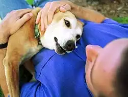

Congratulations on adopting a pet! You are embarking on a wonderful and rewarding relationship. Because adopting a new pet comes with a lot of change for both pet and pet parent, we've compiled a checklist to help make the transition as smooth as possible.
Questions for All Adopters:
Do you have any other pets and how will they react to a new pet?
Is your current residence suited to the pet you're considering?
How will your social life or work obligations affect your ability to care for a pet?
Do you have a plan for your new pet during vacations and/or work travel?
How do the people you live with feel about having a pet in the house?
Are you (or your spouse, partner or roommate) intolerant of hair, dirt and other realities of sharing your home with a pet, such as allergies?
Do you or any of your household/family members have health issues that may be affected by a pet?
What breed, or species, of animal is the best fit with your current lifestyle? (You can find information on specific breeds in our dog breed directory and cat breed directory.)
Is there tension in the home? Pets quickly pick up on stress in the home, and it can exacerbate their health and behavior problems.
Is there an adult in the family who has agreed to be ultimately responsible for the pet's care?
Other Considerations:
What do you expect your pet to contribute to your life? For example, do you want a running and hiking buddy, or is your idea of exercise watching it on TV?
If you are thinking of adopting a young animal, do you have the time and patience to work with the pet through its adolescence, taking house-breaking, chewing and energy-level into account?
Have you considered your lifestyle carefully and determined whether a younger or older animal would be a better match for you?
Can you train and handle a pet with behavior issues or are you looking for an easy-going friend?
Do you need a pet who will be reliable with children or one you can take with you when you travel?
Do you want a pet who follows you all around the house or would you prefer a less clingy, more independent character?
Size Considerations (for Dogs):
What size dog can your home accommodate?
Will you have enough room if your dog grows to be bigger than expected?
What size pet would suit the other people who live in or visit your home regularly?
Do you have another pet to consider when choosing the size of your next pet?
How big a pet can you travel comfortably with?
Pet Costs:
More likely than not, the adopting agency will charge a fee to help defray the cost of taking in unwanted or lost animals. The adoption fee you pay will be a tiny fraction of the money you will spend over the life of your pet.
You may need to pay for your adopted pet to be spayed or neutered before bringing him or her home.
Some expenses are mandatory for all pets, including:
Food
Routine veterinary care
Licensing according to local regulations
Collars, leashes and identification tags
Kitty litter and box
Basic grooming equipment and supplies.
Other expenditures may not be required but are highly recommended:
Permanent identification, such as a microchip or tattoo
Training classes
Additional grooming supplies or professional grooming (depending on your new pet's needs)
A spare collar or leash
A bed and toys
A crate or carrier
Unexpected costs: Accidents and illness can result in costly emergency veterinary care. Recovery tools for finding a missing pet can include posters and rewards.
A pet with special physical or behavioral challenges may require specialized professional support to overcome any obstacles these issues present.
For more on typical pet care costs visit Annual Dog Care Costs and Annual Cat Care Costs.
Time Considerations:
Pets need to be fed two to three times a day, more often in the case of puppies, and need a constant supply of fresh water.
A responsible pet parent should spend at least one hour per day giving direct attention to his or her pet. This may include training, exercising, grooming, and playing or, with cats, may just be lap time on the couch. Dogs will need to be taken out to potty several times a day.
A pet with an abundance of energy needs more time to exercise and interactive toys to keep them entertained.
Pets with long coats need 20 minutes a day of grooming to prevent matting.
Pets with certain medical conditions may need additional attention, including specifically timed injections in the case of diabetic animals.
Remember that adopted pets may need additional bonding and reassurance time in the early weeks.
Shopping Checklist:
It may be a good idea to wait until you select your new pet before you begin shopping for supplies. For example, some items, such as food and water bowls or collars and harnesses, depend upon the size of the pet you will be adopting.
Also, be sure to find out which food your pet was eating in the shelter or foster home so that you can provide the same in the beginning, again to ease the transition. After the pet has settled in, talk with your veterinarian about switching to the food of your choice.
Once you've selected your pet, here's a checklist of supplies you may need:
Necessary Items for Dogs:
Food and water bowls
Food (canned and/or dry)
Collar
Four to six-foot leash
ID tag with your phone number
Hard plastic carrier or foldable metal crate
Dog bed
Doggy shampoo and conditioner
Nail clippers
Canine toothbrush and toothpaste
Brush or comb (depends on your pet's coat length and type)
Super-absorbent paper towels
Sponge and scrub brush
Non-toxic cleanser
Enzymatic odor neutralizer
Plastic poop baggies (biodegradable ones are best) or pooper scooper
Absorbent house-training pads
Variety of toys (a ball, rope, chew toy and puzzle toy are good starts)
Variety of treats (such as small cookies, larger rawhides, etc.)
First-aid supplies
Baby gate(s)
Necessary Items for Cats:
Food and water bowls
Food (canned and/or dry)
Litter box and scooper
Kitty litter
Collar
ID tag with your phone number
Hard plastic carrier
Nail clippers
Feline toothbrush and toothpaste
Brush or comb (depends on your cat's coat length and type)
Super-absorbent paper towels
Sponge and scrub brush
Non-toxic cleanser
Enzymatic odor neutralizer
Variety of toys (toys including catnip are a favorite)
First-aid supplies
PET ADOPTION CHECKLIST
